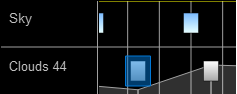

Unreal Blueprints with trueSKY¶
The trueSKY Blueprints provide a wide array of functionality while your game is playing or simulating. We have aimed to make sure our blueprints are as accessible as possible, while still being able to alter all of our different variables.
If you have never used blueprints before, Unreal have a large number of tutorials on understanding and using blueprints.
Getting Values from trueSKY Actor¶
You can edit any of the variables present in the keyframes, layers or attached to the trueSKY Actor. To access these nodes, we have split our variables based on their location. For example, if you want to edit a value on a cloud keyframe, you would use the SetCloudKeyframeValue blueprint node. There is also a correlating GetCloudKeyframeValue for retrieving data
From the image above, Property is the value that you want to change, which is selected using the dropdown. For the keyframe nodes, a Keyframe Unique Identifier (UID) is needed to access the correct keyframe. You can get this by manually going to your keyframe and looking for the UID at the top of the details panel, or there are multiple blueprint nodes available to help you select the correct keyframe.
There are nodes for keyframes and layers. To access the trueSKY actor values, reference it within the blueprints.
Getting Keyframe Values¶
UID¶
To get a keyframe’s properties, you will first need its Unique ID (UID) to identify it. UIDs can be retrieved using a variety of provided Blueprint functions. At this time, the UID displayed on the keyframe and the UIDs returned are not the same. Only use the value returned while this is fixed.
There is a Cloud Keyframe version of all these functions, just replace sky with cloud in the function name. For Cloud Keyframes, you must specify the layer. Layers values are the number displayed on the layer.
GetSkyKeyframebyIndex: Returns a keyframe’s Uid, given an index (this is zero-indexed; the first sky keyframe in a sequence is 0, the second is 1 and so on).
GetPreviousSkyKeyframeBeforeTime: Given a time, returns the Uid of the last sky keyframe before the given time.
GetNextSkyKeyframeAfterTime: Given a time, returns the Uid of the next keyframe after the given time.
GetNextModifiableSkyKeyframe: Returns the Uid of the next keyframe that can be modified without requiring any recalculation (this will be the next sky keyframe + 1).
GetInterpolatedSkyKeyframe: Returns the current interpolated keyframe’s Uid (Note: this cannot be used to set any values; it is read-only).
Once you have a keyframe’s Uid, you can Get and Set its properties. Select a Property from the Dropdown, input a keyframe UID and can you get or set the value.
Get/Set Keyframe + Layer Values¶
We have get and set nodes for both Cloud and Sky Keyframes. Make sure you are inputting the correct UID.
The Nodes have been streamlined to output the correct of data type. Make sure you take from the correct node if your data is a float.
GetSkyKeyFrameValue:
SetSkyKeyframeValue:
GetCloudKeyFrameValue:
SetCloudKeyframeValue:
GetCloudLayerValue:
SetCloudLayerValue:
For example, to adjust the cloudiness of a scene via blueprints, you would use the blueprints in the image below.
Of course, this relies on you have a layer and keyframe already. You can also create Cloud layers and Keyframes via blueprints.
Every sequence has 1 Sky layer that cannot be removed, so you do not need to create or get a reference to a Sky layer. Editing a Sky Keyframe is almost identical to editing a cloud keyframe, and has the same blueprints to get access to the UID of the keyframe.
Get/Set Values on the trueSKYActor¶
To Get/Set these values, just create a reference of the trueSKYSequenceActor, and all the variables have been made public.
To make a reference, make sure the actor is selected in the world view, and context sensitive is ticked.
As you can see there is a list of all the editable variables, organised the same was as they are on the actor.
These setting can be used alongside the Sequencer values, to specify exactly what is required for your project
Getting Layer Values¶
The Layer UID is the number displayed on the Sequencer. Sky Layers do not need a UID, as there can only ever be one.
The number of the layer you are on is shown in the layer’s name, as you can see the image below has a layer 44.
Tools¶
There are Blueprint functions provided to test a scene for lightning and for rain. For lightning, the “Get Lightning” function will provide the start position, end position, colour and magnitude of any lightning present. A magnitude of 0 means there is no lightning present. Additionally, the “Get Precipitation Strength at Position” function will take a given position and return a float between 0.0 and 1.0, indicating the strength of the rain (or snow) at this position.
Example of testing the weather conditions in blueprint.
Queries¶
To test how much cloud (from 0 to 1) is at a specified point, use the function CloudPointTest. Note: The Query Id can be set to any integer value, but should differ from any Query Ids used in separate queries (or else they will be overwritten).
Sample usage of the Cloud Point Test functionality
To test if there is cloud between two points, use CloudLineTest:
Sample usage of the Cloud Line Test functionality
Managing Sequences¶
Though you can only set the active sequence in the editor, it is possible to change the sequence in use mid-game using Blueprint. To do this, create a reference to your TrueSkySequenceActor in Blueprint, then drag the output pin onto the canvas. In the Action List, search for and select “Set Active Sequence”. Repeat for as many sequences as you wish and connect them to relevant events.
Example of how to change the active trueSKY sequence at runtime in blueprint
You can also get the active sequence in Blueprint. Similarly, just drag the output pin of your TrueSkySequence actor onto the canvas and search for and select “Get Active Sequence”. This will return the Sequence Asset in use.

Example of how to query the active trueSKY sequence at runtime in blueprint
Measuring Performance¶
trueSKY has a built-in profiler for GPU and CPU performance. Use “Get Profiling Text” to obtain the values, with the inputs “cpu_level” and “gpu_level” to determine how far down the call tree to display.
The outputs are in milliseconds.

How to retrieve profiling text
Adding and removing Cloud Keyframes¶
The ability to add and remove cloud keyframes during runtime is a powerful tool, which can be used to help build truly dynamic scenes and worlds, as well as add event driven dynamic events at any point during runtime.
Create Cloud Keyframe
The blueprints require a cloud layer ID, which allows for keyframes to be created on any cloud layer within the given sequence. The Cloud Layer ID is passed in as an integer.
We also allow for the input of a time variable (as a float) - allowing for creation of cloud keyframes at either a set time within the timeline or, via use adding a float to the current time value, create keyframes a set amount of time from the current time. The return value the blueprint node outputs is simply the newly created cloud keyframe Unique ID - allowing for easy referencing to the keyframe for altering the values via other blueprint setups (also at runtime).

Delete Cloud Keyframe
This node is rather simple, and allows you at runtime to delete any given keyframe. The only required information to delete the keyframe is its Unique ID. This can either be stored within a variable, or obtained via use of our other blueprints (see Get cloud layer ID -> Get Cloud keyframe ID / Get next Editable Keyframe ID).
This can be used to help control your scene further, and also help alleviate potential issues caused by the create cloud keyframe - as if two keyframes would be created too close to each other they may have a very fast interpolation , so setting up a “get next editable keyframe UID” - Deleting said keyframe via its UID and the Creating the new keyframe at your desired time would help alleviate the issue and get tighter control over the scene overall.
Adding and removing Cloudlayers¶
This feature is a 4.3 specific feature. The blueprints will show up while using the 4.2a and 4.1b legacy versions, however are not supported (unlike the simpler adding cloud keyframe values)
Creating Cloud Layers
Creating a Cloud Layer works similarly as creating a cloud keyframe. The blueprint is also fairly simple, just pass through a “create cloud layer” node, and add a name by typing it into the “name” slot - alternatively feed in any kind of string to have that assigned as a name.
The node outputs a Cloud Layer UID - which will allow for referencing of the layer for other blueprint functions, such as the create cloud keyframe node. Allowing you to create entirely new layers, and add in a new set of keyframes easily.
Deleting Cloud Layers
Deleting a cloud keyframe also mirrors the functionality of the delete cloud keyframe node - just requiring the Cloud layers Unique ID to be input - which will delete that layer in its entirety (including any keyframes that were featured within that cloud layer)
Adding map textures via blueprints¶
This feature works across both 4.2a and 4.3 versions and allows for users to add map textures dynamically.
Previously this has only be possible to do within the editor, requiring the png being referenced to be located in a specific location within the simul folder structure in the engine. This has now been simplified, allowing you to reference any .png within the editor, however saving images into the “Media -> Resouces” folder will still work.
Manual Sequence solution:
Changing Map textures at runtime
The new node “Set Cloud Layer Map Texture by File Name” allows for adding a map texture to a cloud layer at runtime. It will require a cloud layer’s unique ID in order to function - which can be obtained by any of the “get cloud layer UID” blueprints, or alternatively by using the “Create new cloud layer” blueprint if using 4.3 or later versions of the plugin.
You must then input the png file’s name which is located within the Content -> trueSKY folder within your unreal engine project. Ensure that you are referencing the correct file with your string, however it is not case sensitive.